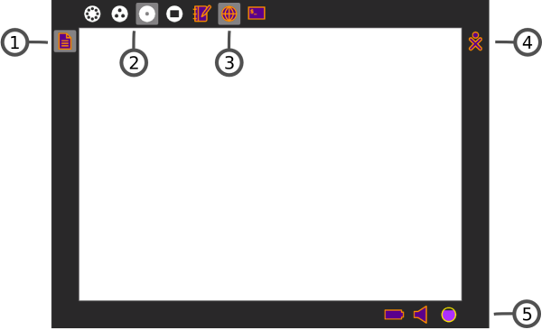
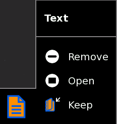

The Frame
The Frame, which you can get to from any view, contains a clipboard, incoming invitations and notifications, buddies, open Activities, and global information that is used across all Views.

- 1. Clipboard
- The left-hand edge of the Frame serves as a clipboard. You can drag objects such as images and text to and from the clipboard, and from and to activities.
- 2. Zoom menu
- The Zoom menu is on the upper-left edge of the Frame. Use it to move between the four Sugar views: Neighborhood, Group, Home, and Activity.
- 3. Open Activity list
- The list of currently open Activities appear on the top edge of the Frame. The active Activity is highlighted. (The Journal always appears here.)
- Sometimes an unlabeled circle appears here --- it usually represents an additional full-screen session started by an Activity whose icon already appears in the top edge of the Frame.
- Invitations also appear on this portion of the Frame. They appear as icons in the color of the person who sent them.
- 4. Active buddy list
- People you are currently collaborating with appear on the right edge of the Frame.
- 5. System status
- Battery, speaker, and network status appear on the lower edge of the Frame.
The Clipboard

You can drag items on the clipboard into Activities. A hover menu also lets you remove them from the clipboard, open them in an Activity, or save (keep) them in your Journal.
Author : TheFrame
© Walter Bender 2008
Modifications:
adam hyde 2008
David Farning 2008
Janet Swisher 2008
Janis Grinbergs 2008
License : General Public License